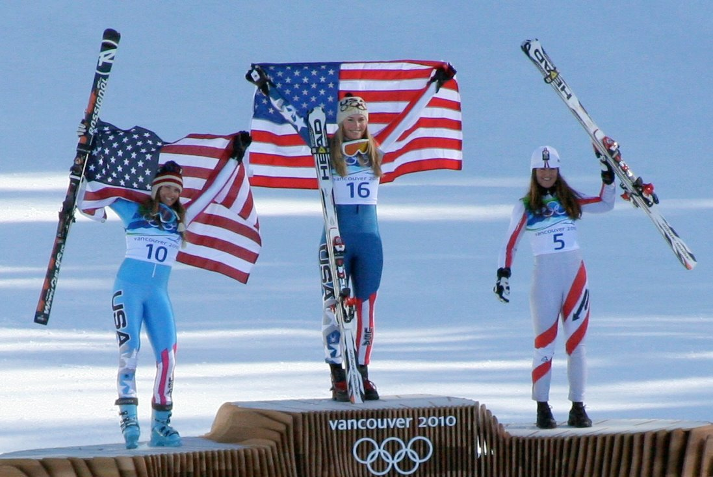
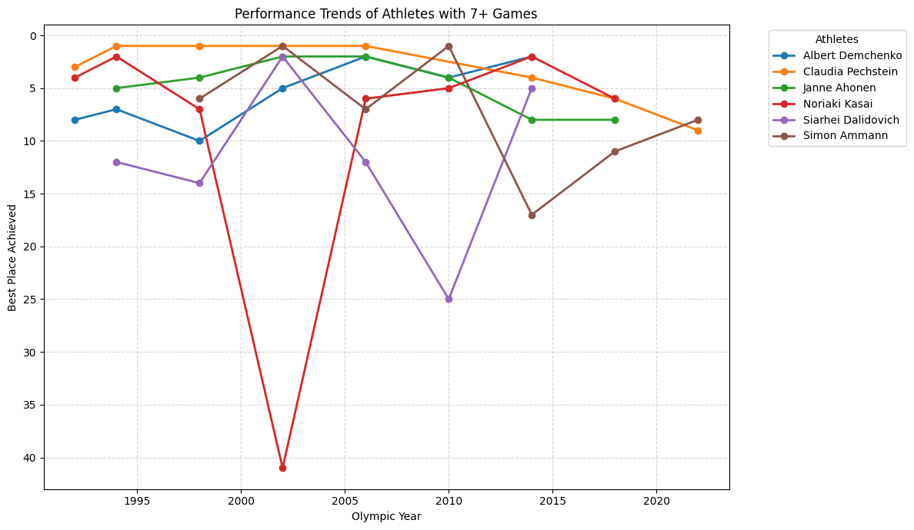

The winter olympics are a collection of athletic events that are held once every four years. This year, the winter olympics are being hosted in Milano and Cortina, Italy. Since the first Winter Olympics in 1924, thousands of athletes have competed in a multitude of disciplines. Some of them might have also had an olympic career. What can we say about the success stories of people who competed in multiple olympic games?

By Eileen - originally posted to Flickr as I can’t believe I was here…., CC BY 2.0, https://commons.wikimedia.org/w/index.php?curid=9528796
Repeating Athletes
For a lot of athletes, the olympic games represent the peak of their athletic career. Nevertheless, some of them might have started competing at such a young age that they’re able to participate in multiple instances of the olympic games. We can take look at a database of the winter olympics to find out which athletes have participated in more than one event.
# Set Upimport pandas as pdimport geopandas as gpdimport matplotlib.pyplot as plt# Load Datawolympics_df = pd.read_csv('data/winter_olympics_medals.csv')# Sample rowwolympics_df.sample(1)
year
type
discipline
event
as
athlete_id
noc
team
place
tied
medal
39576
2002.0
Winter
Ice Hockey (Ice Hockey)
Ice Hockey, Men (Olympic)
Mathias Seger
102297
SUI
Switzerland
11.0
False
NaN
As we see, the database contains some of the important information regarding athlete’s participation in the olympic games. Then, we can use the athlete id to find out which athletes have competed in more than one event.
# Select athletes who have participated in more than one eventmultiple_event_ath = wolympics_df.value_counts('athlete_id').to_frame().query('count>1').reset_index()# Filter database to leave only athletes who have competed multiple eventsfiltered_olympics = wolympics_df[ wolympics_df['athlete_id'].isin(multiple_event_ath['athlete_id'])]# Show a few columns of the filtered datafiltered_olympics.head(10)
year
type
discipline
event
as
athlete_id
noc
team
place
tied
medal
2
1924.0
Winter
Bobsleigh (Bobsleigh)
Four/Five, Men (Olympic)
Charley Stoffel
12796
SUI
Switzerland 2
NaN
False
NaN
3
1928.0
Winter
Bobsleigh (Bobsleigh)
Four/Five, Men (Olympic)
Charley Stoffel
12796
SUI
Switzerland 1
8.0
False
NaN
5
2002.0
Winter
Speed Skating (Skating)
3,000 metres, Women (Olympic)
Clara Hughes
13139
CAN
NaN
10.0
False
NaN
6
2002.0
Winter
Speed Skating (Skating)
5,000 metres, Women (Olympic)
Clara Hughes
13139
CAN
NaN
3.0
False
Bronze
7
2006.0
Winter
Speed Skating (Skating)
3,000 metres, Women (Olympic)
Clara Hughes
13139
CAN
NaN
9.0
False
NaN
8
2006.0
Winter
Speed Skating (Skating)
5,000 metres, Women (Olympic)
Clara Hughes
13139
CAN
NaN
1.0
False
Gold
9
2006.0
Winter
Speed Skating (Skating)
Team Pursuit (6 laps), Women (Olympic)
Clara Hughes
13139
CAN
Canada
2.0
False
Silver
10
2010.0
Winter
Speed Skating (Skating)
3,000 metres, Women (Olympic)
Clara Hughes
13139
CAN
NaN
5.0
False
NaN
11
2010.0
Winter
Speed Skating (Skating)
5,000 metres, Women (Olympic)
Clara Hughes
13139
CAN
NaN
3.0
False
Bronze
12
1924.0
Winter
Cross Country Skiing (Skiing)
18 kilometres, Men (Olympic)
Roberts Plūme
16155
LAT
NaN
NaN
False
NaN
From this filtered data, we see that Charley Stoffel participated in the Olympic Games of 1924 and 1928. On the other hand, Clara Hughes participated for 3 olympic games: 2002, 2006, and 2010. Nevertheless, there are 7 entries since she competed in multiple events during the same year. If we take her story as an example, we can see that she won a Bronze medal on her first games, a gold and silver medals on her second games, and a bronze medal on her last games. Does that mean that there is a point where her performance just wouldn’t improve?
Athletes Across Multiple Years
Since we are interested in the difference of performance between the same athlete across the years, we want to only showcase the athletes who competed in more than one year. Moreover, to be charitable with them, we might want to take their best performance at a year in case they participated in more than one event in a single year. In our example with Clara Hughes, she participated in two events in the Winter Olympics of 2002, but she placed 10th on one event and 3rd on the other.
# Group by athlete, name and year, then find the minimum (best) placebest_per_year = filtered_olympics.groupby(['as', 'athlete_id', 'year'])['place'].min().reset_index()# Clean up the Year and Place (converting 1924.0 to 1924)best_per_year['year'] = best_per_year['year'].astype(int)best_per_year.head()
as
athlete_id
year
place
0
A J Kitt
87997
1988
26.0
1
A J Kitt
87997
1992
9.0
2
A J Kitt
87997
1994
17.0
3
A J Kitt
87997
1998
NaN
4
A. J. Mleczko
100464
1998
1.0
With this new visualization we can see how people’s performance has fluctuated throughout the years. For A J Kitt, his peak performance was during his 2nd Winter Olympics. We see that he declined after that until he did not place on his last year. Looking at him specifically, A J Kitt was born in 1968 which means he was 20 for his first Winter Olympics and 32 for his last. Particularly, he was 24 years old for his peak olympic performance.
Surprisingly, some people have competed for up to 8 years, and at least 8 people have competed for at least 7 years.
We can look at the athletes who have participated in 7 or more winter olympics to see what their performance has been like.
# Identify IDs of athletes who competed in 7 or more yearsveteran_ids = best_per_year.groupby('athlete_id').size()veteran_ids = veteran_ids[veteran_ids >=7].index# Filter the data and remove NaN places for the plotplot_df = best_per_year[best_per_year['athlete_id'].isin(veteran_ids)].dropna(subset=['place'])# 3. Create the plotplt.figure(figsize=(12, 7))for athlete_id in plot_df['athlete_id'].unique(): subset = plot_df[plot_df['athlete_id'] == athlete_id] athlete_name = subset['as'].iloc[0] plt.plot(subset['year'], subset['place'], marker='o', linewidth=2, label=athlete_name)# 4. Stylingplt.gca().invert_yaxis() # Best results at the topplt.xlabel('Olympic Year')plt.ylabel('Best Place Achieved')plt.title('Performance Trends of Athletes with 7+ Games')plt.legend(title="Athletes", bbox_to_anchor=(1.05, 1), loc='upper left')plt.grid(True, linestyle='--', alpha=0.5)plt.tight_layout()plt.show()

Of the athletes who have competed in 7 or more games, we can see that all of them started competing later than 1992. A contributing factor to their number of participations might be that there were Winter Olympics held on 1992 and 1994 due to the schedule change to hold the Winter Olympics in different years that the summer Olympics. Out of these 6 athletes, we can see that Pechstein, Ahonen, and Demchenko had a relatively stable olympic career. Contrastingly, Kasai, Dalidovich, and Ammann had a more tumultuous olympic career. Investigating further into these 6 athletes can tell us more about their olympic career.
# Load biographical databios = pd.read_csv('data/bios.csv')# Extract data from the 6 athletesbios.query('athlete_id in @veteran_ids')
athlete_id
name
born_date
born_city
born_region
born_country
NOC
height_cm
weight_kg
died_date
81401
82053
Claudia Pechstein
1972-02-22
Ost-Berlin (East Berlin)
Berlin
GER
Germany
166.0
61.0
NaN
82843
83500
Janne Ahonen
1977-05-11
Lahti
Päijät-Häme
FIN
Finland
184.0
66.0
NaN
84482
85156
Albert Demchenko
1971-11-27
Chusovoy
Perm Kray
RUS
Russian Federation Unified Team
185.0
95.0
NaN
84574
85250
Siarhei Dalidovich
1973-05-18
Orsha
Vitebsk
BLR
Belarus
175.0
68.0
NaN
87119
87815
Noriaki Kasai
1972-06-06
Shimokawa
Hokkaido
JPN
Japan
176.0
60.0
NaN
99074
99870
Simon Ammann
1981-06-25
Grabs
Sankt Gallen
SUI
Switzerland
171.0
55.0
NaN
Surprisingly, all athletes are from different countries, but also countries that normally succeed in the Winter Olympics. Additionally, it seems like none of these athletes stayed around for the 2026 Olympics. Claudia Pechstein retired in 2025 and Simon Amman did not make the 2026 Switzerland Olympic team. Lastly, these 6 veterans played a variety of sports. Speed Skating: Claudia Perchstein; Ski Jumping: Janne Anohen, Simon Ammann, Noriaki Kasa; Luge: Albert Demchenko; Cross Country Ski: Siarhei Dalidovich. Having 3 veterans (7+ olympics) in ski jumping might symbolize that it has more opportunities of winning even as an older athlete.